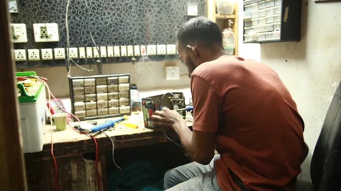
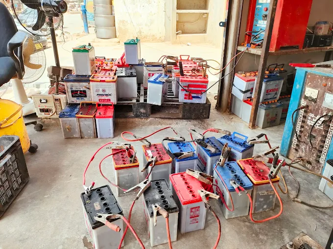
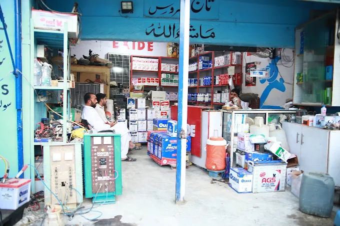

آپ کو کیا چاہیے
- میٹر کے مالک کے CNIC کی کاپی
- تازہ K-Electric بل
- پراپرٹی کی ملکیت یا کرایہ داری کا ثبوت
- لگا ہوا on-grid یا hybrid سسٹم
پہلے سائٹ وزٹ سے لے کر برسوں کی بعد از فروخت سروس تک، ایک ہی ٹیم آپ کا سسٹم سنبھالتی ہے۔
گھر کا عام 5 kW سسٹم آرڈر کنفرم ہونے کے بعد ایک سے دو دن میں لگ جاتا ہے۔
ہم آپ کے گھر یا دکان آتے ہیں، چھت، سایہ اور سمت دیکھتے ہیں، اور وہ چیزیں لکھتے ہیں جو آپ چلانا چاہتے ہیں۔
آپ کو لکھی ہوئی قیمت ملتی ہے جس میں پینل کی تعداد، inverter، بیٹری اور اسٹرکچر شامل ہوتا ہے، اسی دن کے ریٹ پر۔
ہماری ٹیم اسٹرکچر، پینل، inverter، بیٹری، وائرنگ، بریکر، surge protection اور ارتھنگ لگاتی ہے۔
ہم سسٹم ٹیسٹ کرتے ہیں، آپ کے فون پر مانیٹرنگ سیٹ کرتے ہیں اور استعمال کا طریقہ سمجھاتے ہیں۔
آپ کا سسٹم اس طرح لگایا جاتا ہے کہ بعد میں net metering ہو سکے۔ ہماری net metering درخواست کی سروس جلد شروع ہوگی۔
خرابی، صفائی، سسٹم بڑا کرنے یا بعد میں بیٹری لگوانے کے لیے کال یا واٹس ایپ کریں۔
Net metering میں دن کے وقت آپ کے پینلز کی اضافی بجلی K-Electric کو جاتی ہے اور آپ کے بل میں ایڈجسٹ ہوتی ہے۔ ہم net metering کی درخواستوں کی تیاری کر رہے ہیں۔ یہ اس طرح ہوگا:
Net metering کے قوانین اور اضافی بجلی کے ریٹ NEPRA طے کرتا ہے اور یہ بدل سکتے ہیں۔ فیصلہ کرنے سے پہلے موجودہ قوانین ہم سے پوچھ لیں۔
کراچی کی گرد چند ہفتوں میں پینل کی پیداوار کافی کم کر سکتی ہے۔ باقاعدہ صفائی اور چیکنگ سے پورے یونٹ ملتے رہتے ہیں۔
پینل، کلیمپ اور کنیکٹر کی دھلائی اور جانچ۔
Inverter کے error code، بار بار ٹرپ ہوتے بریکر، کم پیداوار اور وائرنگ کی خرابیاں۔
مزید پینل یا بیٹریاں لگوائیں، inverter بدلیں، یا سسٹم نئے گھر منتقل کروائیں۔

UPS چارج نہیں ہو رہا، بیپ کر رہا ہے یا لوڈ پر بند ہو جاتا ہے؟ دکان پر لے آئیں۔ ہم سرکٹ بورڈ ٹھیک کرتے ہیں، خراب پرزے بدلتے ہیں اور واپس دینے سے پہلے ہر یونٹ لوڈ پر ٹیسٹ کرتے ہیں۔
اپنی بیٹری پہلوان گوٹھ کی دکان پر لائیں، یا ہمیں کال کریں۔
UPS، tubular اور گاڑی کی بیٹریوں کا چیک اپ اور چارجنگ۔
Lithium، tubular، اور گاڑی کی ڈرائی یا عام بیٹریاں، دکان پر فٹنگ کے ساتھ۔ پرانی بیٹری دیں اور صرف فرق کی رقم ادا کریں۔
قریب میں گاڑی اسٹارٹ نہیں ہو رہی؟ 0315 2020525 پر کال کریں، ہم آپ کے پاس آئیں گے۔


اپنے تازہ K-Electric بل کی تصویر واٹس ایپ کریں اور بتائیں کہ کیا چلانا ہے۔ ہم سسٹم کا سائز اور آج کی قیمت بتائیں گے۔